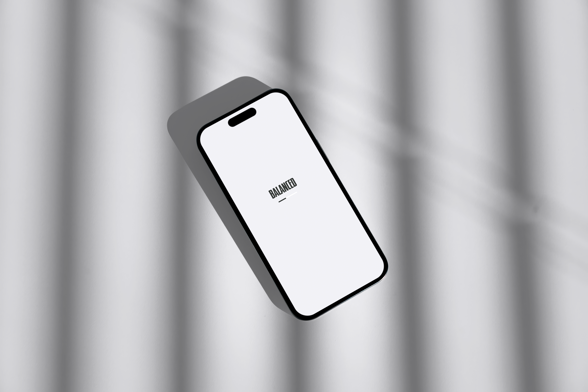

Balanced


about
Balanced is a smart work-calendar tool designed for independent fitness professionals. It bridges the gap between standard appointment calendars and invoicing, providing full automation for monthly salary calculations. The project was born out of personal necessity: reconciling scattered shifts, different employers, and variable rates without repeating the same spreadsheet work every month.
research
I mapped out the existing market to understand why current solutions fall short for my colleagues and me. While Generic Calendars (Google/Apple) are excellent for time management, they lack a financial data layer and cannot perform “hours x rate” manipulations. On the other hand, Invoicing Software (Morning/Green Invoice) focuses only on the end of the process—document production—without helping the user calculate how much money they should actually demand, leaving the cross-referencing manual and tedious. The “pain” for trainers in Israel is not in managing the calendar itself, but in the wasted time and human errors created by the need to manually bridge the gap between their schedule and their bank account at the end of every month.

the problem
The end of the month becomes a logistical nightmare: manually reviewing every shift in the calendar, classifying them by employer, matching rates and venues, and rebuilding totals before invoicing. It is slow, easy to get wrong, and pulls attention away from clients and training.
the solution
Smart Calendar Integration keeps each session in context—employer, location, and pay—so the calendar remains the single source of truth. Dynamic Earnings Dashboard rolls sessions into live monthly totals by employer and rate. One-Click Invoice Ready output aligns billing with what you actually taught, not what you remembered to copy into another tool.
userflow

design system
The design language is minimalist, calming, and functional: generous white space, restrained typography, and clear hierarchy so financial clarity feels approachable. Color and motion are used sparingly to signal status and completion without adding noise.